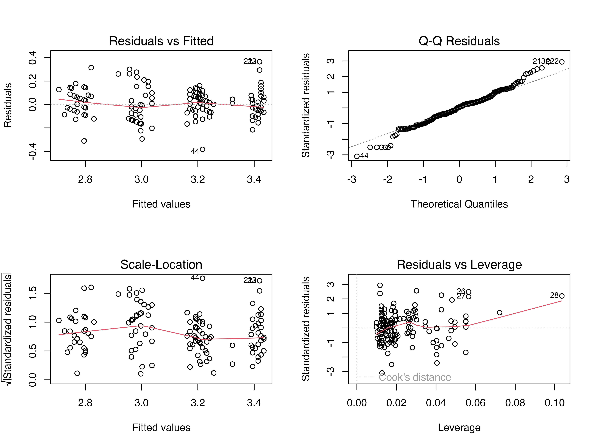
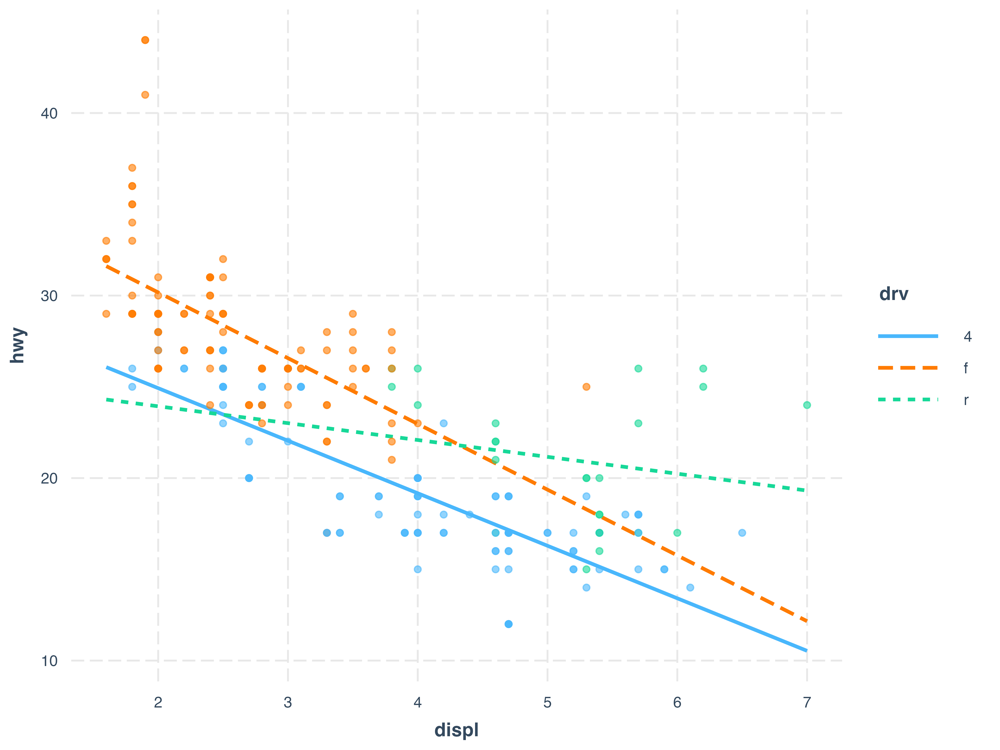

library(tidyverse)
library(ggplot2)
library(car) # For vif()
library(broom) # For augment()
# 回顾模型
# mpg 数据集
mlr_model_mpg <- lm(hwy ~ displ + cyl + drv, data = mpg)
# 问题数据 (回顾创建过程)
set.seed(42)
n_prob <- 100
x1_prob <- rnorm(n_prob)
x2_prob <- x1_prob * 0.8 + rnorm(n_prob, 0, 0.1) # 共线性
x3_prob <- rnorm(n_prob)
y_prob <- 2 + 3*x1_prob + 1*x2_prob - 2*x3_prob + rnorm(n_prob, 0, 2)
y_prob[1] <- y_prob[1] + 15 # 异常/强影响点
x1_prob[2] <- x1_prob[2] + 4 # 高杠杆点
prob_data <- tibble(y = y_prob, x1 = x1_prob, x2 = x2_prob, x3 = x3_prob)
prob_model <- lm(y ~ x1 + x2 + x3, data = prob_data)
# 诊断回顾 (上一周内容)
# plot(mlr_model_mpg)
# plot(prob_model)
# vif(mlr_model_mpg)
# vif(prob_model)
# cooks.distance(prob_model)第十周：模型改进与选择的批判性视角
1. 模型诊断之后：如何改进？
上周我们学习了如何诊断线性回归模型，识别潜在的问题，如违反 L.I.N.E. 假设、多重共线性或存在强影响点。本周我们将探讨如何应对这些问题，改进我们的模型，并讨论如何在多个可能的模型中进行选择。
本周目标
- 学习应对模型诊断问题的常用策略：
- 变量变换 (Variable Transformation): 处理非线性、异方差、残差非正态。
- 处理多重共线性: 移除变量、合并变量、岭回归/Lasso (概念介绍)。
- 处理强影响点: 检查数据错误、移除点（需谨慎）、使用稳健回归。
- 理解并应用交互项 (Interaction Terms) 来捕捉变量间的协同效应。
- 批判性地看待自动模型选择方法（如
step()）。 - 掌握基于理论、诊断结果和简洁性原则进行模型选择的思路。
- 了解 AIC 和 BIC 作为模型选择的参考指标。
我们将继续使用之前的模型和数据作为示例。
2. 应对诊断问题的策略
2.1 变量变换 (Variable Transformation)
当模型违反线性性、等方差性或残差正态性假设时，对因变量 Y 或某个自变量 X 进行数学变换（如取对数、平方根、倒数等）有时可以改善情况。
常用变换:
- 对数变换 (Log Transformation):
log(Y)或log(X)。- 适用场景: 处理右偏 (Right-skewed) 数据、稳定随均值增大而增大的方差、将指数增长关系线性化。
- 注意: 变量必须取正值。可考虑
log(Y + c)。 - 系数解释变化: (见讲义详细说明)
- 平方根变换 (Square Root Transformation):
sqrt(Y)或sqrt(X)。适用于计数数据或轻微右偏/异方差。变量需非负。 - 倒数变换 (Reciprocal Transformation):
1/Y或1/X。处理严重右偏。变量不能为 0。 - 平方变换 (Square Transformation): \(Y^2\) 或 \(X^2\)。处理左偏 (Left-skewed) 数据。
- Box-Cox 变换: 自动寻找最佳幂变换 (\(\lambda\)) (需要
MASS包)。
- 对数变换 (Log Transformation):
示例 (对数变换): 假设发现
hwy的残差呈喇叭口（异方差）。# 尝试对 hwy 取对数 mlr_model_log_hwy <- lm(log(hwy) ~ displ + cyl + drv, data = mpg) summary(mlr_model_log_hwy)#> #> Call: #> lm(formula = log(hwy) ~ displ + cyl + drv, data = mpg) #> #> Residuals: #> Min 1Q Median 3Q Max #> -0.38326 -0.06832 0.00667 0.06868 0.36474 #> #> Coefficients: #> Estimate Std. Error t value Pr(>|t|) #> (Intercept) 3.56292 0.04329 82.304 < 2e-16 *** #> displ -0.04983 0.01938 -2.571 0.0108 * #> cyl -0.06661 0.01400 -4.756 3.49e-06 *** #> drvf 0.21762 0.02156 10.092 < 2e-16 *** #> drvr 0.23605 0.02989 7.897 1.18e-13 *** #> --- #> Signif. codes: 0 '***' 0.001 '**' 0.01 '*' 0.05 '.' 0.1 ' ' 1 #> #> Residual standard error: 0.1247 on 229 degrees of freedom #> Multiple R-squared: 0.7748, Adjusted R-squared: 0.7708 #> F-statistic: 196.9 on 4 and 229 DF, p-value: < 2.2e-16# 诊断新模型 par(mfrow=c(2,2)) plot(mlr_model_log_hwy)
par(mfrow=c(1,1)) # 观察残差图和 QQ 图是否有改善选择变换的原则: 优先考虑 Y；基于理论或诊断图；注意系数解释变化；尝试比较。
2.2 处理多重共线性 (VIF > 5 或 10)
- 策略:
- 移除变量: 移除理论上不重要或 VIF 最高的变量之一 (可能引入遗漏偏误)。
- 合并变量: 将高度相关的变量合并为综合指标 (如均值、PCA)。
- 收集更多数据:。
- 使用专门方法 (高级): 岭回归 (Ridge), Lasso 回归。
- 示例 (移除变量): 在
prob_model中，x1 和 x2 的 VIF 高。尝试移除 x2。
2.3 处理强影响点 (Cook’s D > 1 或 0.5 或 4/n)
策略:
- 检查数据错误: 修正或删除错误。
- 检查是否代表特殊情况: 单独分析或分层建模。
- 移除影响点 (需极其谨慎！): 仅在确认错误或不代表总体时考虑；必须报告；比较移除前后的模型。
- 使用稳健回归 (Robust Regression): (高级) 如
rlm()fromMASS。
示例 (比较移除影响点): 在
prob_model中，第一个点可能是强影响点。# 识别影响点索引 (假设 Cook's D > 0.5) influential_prob_indices <- which(cooks.distance(prob_model) > 0.5) # print(influential_prob_indices) # 假设结果是 1 # 拟合移除影响点后的模型 if(length(influential_prob_indices) > 0) { prob_model_robust <- lm(y ~ x1 + x2 + x3, data = prob_data[-influential_prob_indices, ]) # 比较摘要 summary(prob_model) summary(prob_model_robust) } else { print("No highly influential points found based on Cook's D > 0.5") }#> #> Call: #> lm(formula = y ~ x1 + x2 + x3, data = prob_data[-influential_prob_indices, #> ]) #> #> Residuals: #> Min 1Q Median 3Q Max #> -3.6001 -1.1900 -0.2038 1.2253 4.6613 #> #> Coefficients: #> Estimate Std. Error t value Pr(>|t|) #> (Intercept) 2.0493 0.1818 11.272 <2e-16 *** #> x1 3.1105 1.6414 1.895 0.0612 . #> x2 1.0219 2.0328 0.503 0.6163 #> x3 -2.0731 0.1823 -11.371 <2e-16 *** #> --- #> Signif. codes: 0 '***' 0.001 '**' 0.01 '*' 0.05 '.' 0.1 ' ' 1 #> #> Residual standard error: 1.785 on 94 degrees of freedom #> Multiple R-squared: 0.8823, Adjusted R-squared: 0.8786 #> F-statistic: 234.9 on 3 and 94 DF, p-value: < 2.2e-16
3. 交互项 (Interaction Terms)
当一个自变量的效果依赖于另一个自变量的水平时，引入交互项（变量乘积）。
模型形式 (含交互项): \[ Y = \beta_0 + \beta_1 X_1 + \beta_2 X_2 + \beta_3 (X_1 \times X_2) + \epsilon \]
系数解释:
- \(\beta_1\): \(X_2=0\) 时，\(X_1\) 的效应。
- \(\beta_2\): \(X_1=0\) 时，\(X_2\) 的效应。
- \(\beta_3\): \(X_2\) 每增加 1 单位，\(X_1\) 对 Y 的效应额外变化 \(\beta_3\)。
- \(X_1\) 对 Y 的总效应: \((\beta_1 + \beta_3 X_2)\)，随 \(X_2\) 变化。
R 实现: 使用
*或:。Y ~ X1 * X2(推荐) 或Y ~ X1 + X2 + X1:X2
# 示例：研究 displ 对 hwy 的影响是否因 drv 而异？ interaction_model_mpg <- lm(hwy ~ displ * drv, data = mpg) summary(interaction_model_mpg)#> #> Call: #> lm(formula = hwy ~ displ * drv, data = mpg) #> #> Residuals: #> Min 1Q Median 3Q Max #> -8.489 -1.895 -0.191 1.797 13.467 #> #> Coefficients: #> Estimate Std. Error t value Pr(>|t|) #> (Intercept) 30.6831 1.0961 27.994 < 2e-16 *** #> displ -2.8785 0.2638 -10.913 < 2e-16 *** #> drvf 6.6950 1.5670 4.272 2.84e-05 *** #> drvr -4.9034 4.1821 -1.172 0.2422 #> displ:drvf -0.7243 0.4979 -1.455 0.1471 #> displ:drvr 1.9550 0.8148 2.400 0.0172 * #> --- #> Signif. codes: 0 '***' 0.001 '**' 0.01 '*' 0.05 '.' 0.1 ' ' 1 #> #> Residual standard error: 3.034 on 228 degrees of freedom #> Multiple R-squared: 0.746, Adjusted R-squared: 0.7405 #> F-statistic: 134 on 5 and 228 DF, p-value: < 2.2e-16# 解读交互项系数 (如 displ:drv4): # 相对于参照组 drv='f'，四驱 drv='4' 会使 displ 对 hwy 的负效应 (斜率) 发生多少变化。 # 如果交互项显著 (P < 0.05)，说明 displ 的影响依赖于驱动方式。 # 可视化交互效应 # install.packages("interactions") library(interactions) interact_plot(interaction_model_mpg, pred = displ, modx = drv, plot.points = TRUE)
# 如果线不平行，提示存在交互效应。
4. 模型选择的批判性视角
选择“最佳”模型需要在简洁性和预测/解释能力之间权衡。
- 常见策略与批判:
自动逐步回归 (
step()):- 方法: 自动增删变量优化 AIC 等标准。
- 缺点: 结果不稳定、P 值失效、可能选出无意义模型。不推荐常规使用。
基于理论和领域知识: 优先选择理论重要、可解释的变量。
基于模型诊断: 移除导致严重问题的变量（如果合理）。
基于简洁性原则 (Parsimony): 解释力相近时选更简单的。
基于信息准则 (AIC/BIC):
- 衡量拟合优度与复杂度的权衡。
- 目标：选择 AIC 或 BIC 最小的模型。
- BIC 对复杂度惩罚更重，倾向于更简洁模型。
- 可比较非嵌套模型。
# 比较两个模型的 AIC/BIC model1 <- lm(hwy ~ displ + cyl, data = mpg) model2 <- lm(hwy ~ displ + drv, data = mpg) AIC(model1, model2)#> df AIC #> model1 4 1288.779 #> model2 5 1196.741BIC(model1, model2)#> df BIC #> model1 4 1302.601 #> model2 5 1214.018
- 最佳实践: 结合理论、诊断、简洁性和信息准则进行综合判断。
5. 本周总结与预告
本周我们探讨了模型诊断后的改进策略（变量变换、处理共线性/影响点）和交互项的应用。我们还批判性地讨论了模型选择的方法，强调了综合判断的重要性。
下周预告: 进入分类预测领域，学习Logistic 回归原理、系数解释（优势比 Odds Ratio）及 R 实现。Capstone 项目启动！